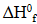
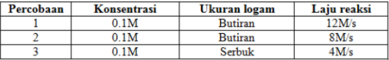

Soal Kimia
No.1
Teori atom yang mengatakan bahwa elektron beredar mengelilingi inti pada orbit tertentu adalah model atom....
a.Daltonb.Thomson
c.Rutherford
d.Niels bohr
e.mekanika kuantum
JawabanD.
No.2
Dari angka 0, 1, 2, 4, 7, 8 akan dibuat bilangan yang terdiri dari tiga angka yang berbeda. Banyaknya bilangan berbeda yang kurang dari 760 adalah ….
a.65
b.76
c.86
d.90
e.98
JawabanB.
No.3
Jika diketahui nilaisenyawa adalah sebagai berikut:
Maka nilai perubahan entalpi pembakaran 60 gram gas NO (Mr = 30) adalah....
a.-112 kJ
b.–56 kJ
c.-23 kJ
d.+56 kJ
e.+112 kJ
jawabanA.
No.4
Berdasarkan data tersebut, variabel bebas, variabel terikat, dan variabel terkontrol berturut – turut adalah....
a.konsentrasi – ukuran logam – laju reaksi
b.laju reaksi – ukuran logam – konsentrasi
c.konsentrasi – laju reaksi – ukuran logam
d.ukuran logam – laju reaksi – konsentrasi
e.laju reaksi – konsentrasi – ukuran logam
jawabanD.
No.5
Pada reaksi antara gas hidrogen dan gas oksigen dihasilkan sejumlah uap air. Apabila gas hidrogen yang direaksikan sebanyak 12 liter, maka gas oksigen yang diperlukan dan uap air yang dihasilkan sebanyak....
a.24 liter – 12 liter
b.12 liter – 6 liter
c.6 liter – 12 liter
d.12 liter – 24 liter
e.24 liter – 6 liter